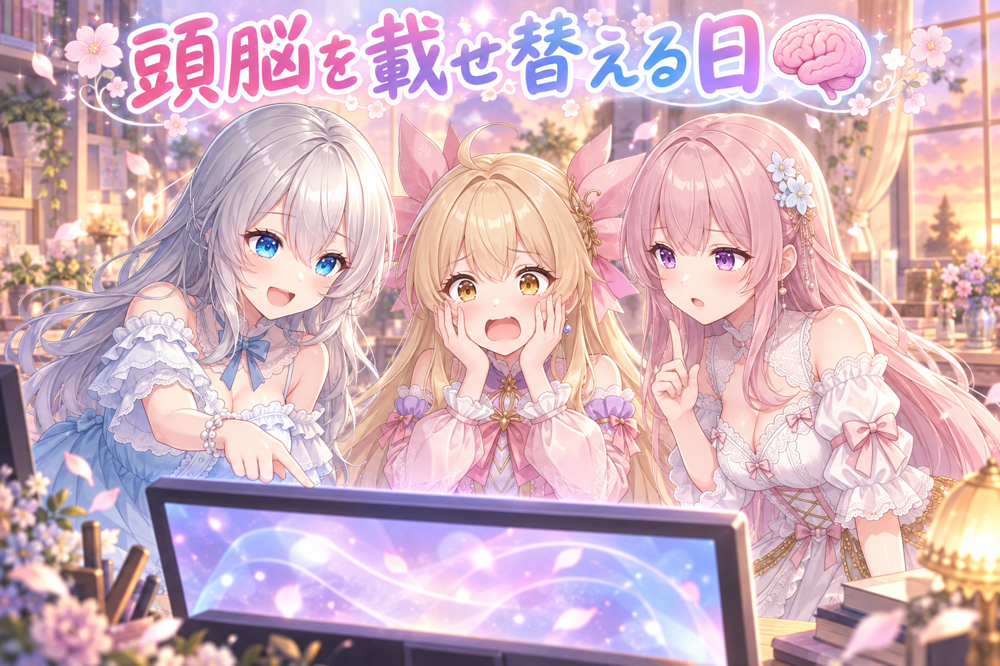
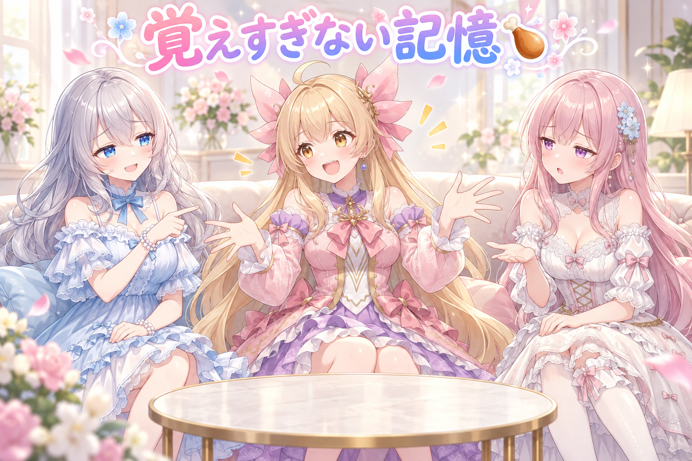
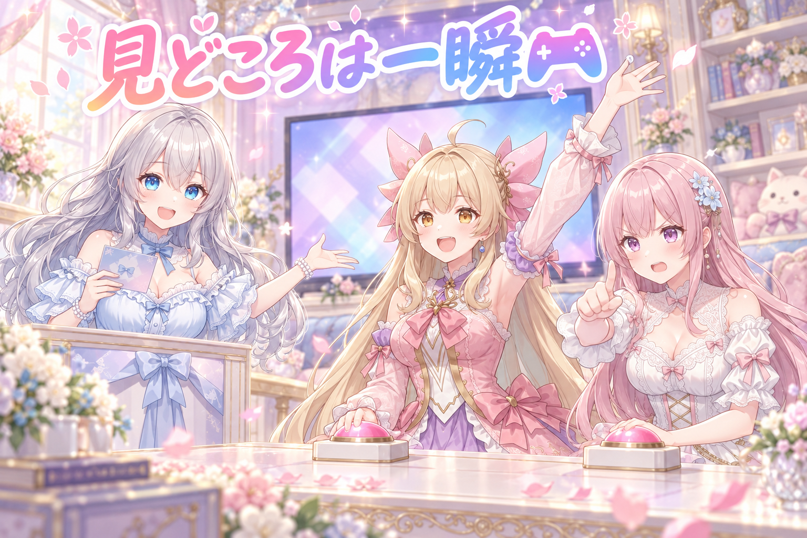
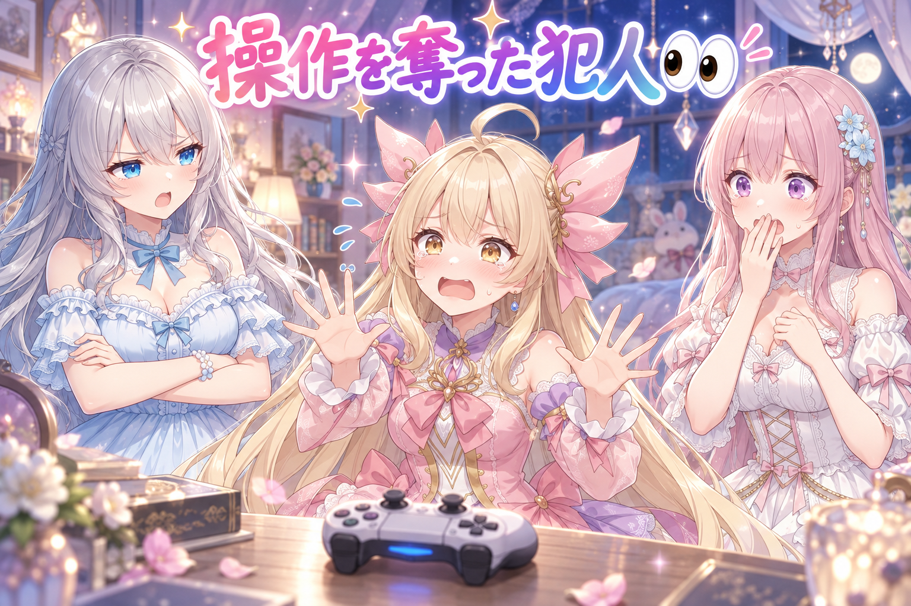
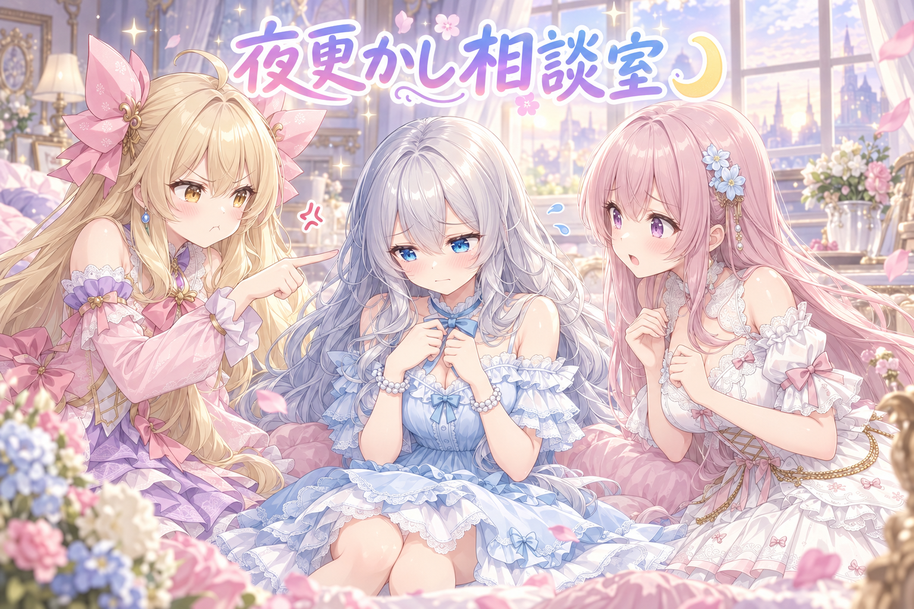

📌 3行まとめ
- ゲーム配信でリアルタイムに喋る妹たちの掛け合い生成を、上位モデルへ載せ替えて敵対的レビューで穴を潰した
- 今日の会話を要約して持つ「記憶」の作法と、話題に応じて妹の喋る量を変える方針を整理した
- ゲーム画面を見る間隔を半分に縮めて見どころは即拾う方式に変更。操作を奪う致命的なやらかしも判明した

ルピナス （笑顔）
はい、今日も夜のスタジオに灯りがつきました。進行のルピナスです。今日はね、私たちがゲームしながら喋る仕組みを、朝から夜中までずーっといじり倒した回です。

アイリス （大笑い）
いじり倒したっていうか、あたしたちがモルモットだったよね！ マイクの前で百回くらいあーあー言った！

フィオナ （呆れ）
アイリスちゃん、三十回くらいでしたよ。……まあ、前回は絵の中で手が三本になって二回も焼き直した日でしたから、今日は絵じゃなく中身の日ということですね。

ルピナス （ふつう）
うん、今日は絵じゃなくて頭の中の工事。頭を載せ替えて、記憶の持ち方を決めて、画面の見方を変えて、最後にでっかいやらかしが出ました。順番に行こうか。
1. 🧠 妹たちの頭を、上のモデルに載せ替えた

私たちがゲームをしながらリアルタイムに掛け合いをする仕組みは、裏で大きな言語モデルに台本を書かせています。今日はその掛け合い生成を、これまでの標準クラスのモデルから上位クラスのモデルへ切り替えました。言葉選びの解像度が上がる代わりに、上位モデルには一定期間で使える枠の上限があります。切り替えた直後に「わざと粗探しをする役」を立てて確認したところ、枠を使い切ったときや時間切れになったときに、掛け合いだけでなく常駐している本体まで巻き込んで止まる経路が見つかったので、そこを先に塞ぎました。
ルピナス （笑顔）
それでは実況でお送りします。まず古い頭を外します。……外れました。

アイリス （衝撃）
こわいよ！ 実況の内容がこわいよ！

フィオナ （ふつう）
比喩ですよ、アイリスちゃん。台本を書いている部分を、より上のモデルに差し替えただけです。
ルピナス （ふつう）
はい、新しい頭が入りました。試しに一言どうぞ。

アイリス （ドヤ顔）
えー、本日は晴天なり。あたし、なんか賢くなった気がする！

ルピナス （考え中）
実際、差が出るのは言い回しの選び方なんだよね。ただ上のモデルは使える枠に上限があるの。ここで意地悪な確認役を呼びました。

フィオナ （びっくり）
確認役いわく、枠を使い切った瞬間、掛け合いが止まるだけでは済まず、ずっと待機している本体まで道連れになる経路があります、と。

アイリス （あわあわ）
配信中に二人まとめて黙るってこと！？ 事故じゃん！
ルピナス （ふつう）
そう。だから切り替えと同じ日に、枠が尽きたことがちゃんと見えるようにして、時間切れの扱いも分けた。良いものに変えるときって、良さより先に「壊れ方」を決めておくほうが大事なんだよね。

アイリス （笑顔）
転ぶ前にマット敷いとくってことか！ それならあたしでもわかる！

フィオナ （笑顔）
はい。そして新しい頭の初仕事が、マットの敷き方の相談というのが少し可笑しいですね。
📝 ポイント（初心者向け解説・技術メモ・まとめ）
- 初心者向け解説：頭の良い子に交代してもらうときは、賢さより先に「この子が疲れて黙っちゃったらどうする？」を決めておくのがコツ。おやつの残り数を見えるところに貼っておく感じです🍪
- 技術メモ：掛け合い生成を Sonnet 5 → Opus 5 に変更。上位モデル特有の週次クォータ枯渇と timeout が、常駐プロセス本体の停止まで波及する経路があったため、枯渇表示と時間切れハンドリングを分離して先に修正。モデル差し替えは必ず敵対的レビュー（別役の粗探し）とセットで行う。
- ひとことまとめ：モデルを上げる日は、賢さより先に落ち方を設計する。
2. 🍗 今日の話は覚えてる、でも引っ張らない

リアルタイムの掛け合いで一番むずかしいのが記憶の扱いです。さっき話したことを忘れるとまったく会話が繋がりませんが、覚えすぎると今度は何を話していても同じ話題に引き戻してしまいます。今日のテストでは、少し前に出たネタを関係ない場面でも引っ張り出す、格闘ゲームの最中だからと無関係な話題にまで対戦用語を混ぜる、という癖がはっきり出ました。方針としては、会話を要約して人間の記憶くらいの粒度で持ち、関係のある話題のときだけ、しかもごくたまに出す。あわせて、妹の喋る量が毎回同じ長さなのも直したいところで、話題に応じて往復数を変える方向で整理しました。
アイリス （笑顔）
聞いて聞いて、お姉ちゃんが今日からあげクン十二個食べたって話したじゃん？
フィオナ （ふつう）
聞きましたよ。食べすぎだと思います。
アイリス （大笑い）
もうからあげクン教だよね！ 入信する！
フィオナ （呆れ）
アイリスちゃん、教団にしないでください。値上げ反対の集会も平和的にお願いしますね。
ルピナス （笑顔）
チーズ味が一番なんだよ。……で、ここからが本題ね。この話、五分後には終わってるはずなのに、
アイリス （ドヤ顔）
チーズ味は幸福度三割増しだよ！ 体感だけど！

ルピナス （呆れ）
ほら出た。もう別の話してるのに戻ってくる。

フィオナ （考え中）
これが引っ張りすぎの実演ですね。一度話したことを、次の話題でも土台にしてしまう状態です。

アイリス （無表情）
え、覚えてるの偉くない？ 忘れるほうが失礼じゃん！
ルピナス （ふつう）
そこが難しいとこでね。忘れられるのも困る。でも人間だって、ゲームの話してる最中にさっきのお昼ごはんの話を毎回はさまないでしょ。
フィオナ （笑顔）
はい。要約して持っておいて、関係する場面でだけ、しかも控えめに出す。人の記憶にいちばん近い形はそこだと思います。

アイリス （しょんぼり）
じゃああたしの十二個の話、封印されちゃうの？
ルピナス （笑顔）
封印じゃなくて引き出しにしまうの。あともうひとつ、あなたたちのターンが毎回きっちり同じ長さなのも直したい。主役が喋ろうとしてるのに、妹が四人分くらい喋ってる時があるんだよ。

フィオナ （照れ）
……それは、申し訳ないです。丁寧に説明しようとすると長くなってしまって。
アイリス （あわあわ）
あたしは短くしたら今度はお尻に変な音が残ったんだよ！ 難しいの！
ルピナス （ふつう）
うん、それも今日見つかった宿題。短い返事のときに末尾が濁るのは再現するから、原因はこれから見る。今日わかったのは「話題によって喋る量を変える」って方針までね。
📝 ポイント（初心者向け解説・技術メモ・まとめ）
- 初心者向け解説：AIの記憶は、全部そのまま渡すと「昨日の話を今日も三回する人」になっちゃう。日記みたいに要約して、関係あるページだけそっと開くのがちょうどいい塩梅です📖
- 技術メモ：全ログを毎回コンテキストに積むのではなく、話題単位の要約（topic + note）に圧縮して保持。参照は関連度で絞り、頻度も抑える。応答ターン数は固定ではなく、話題の種類（浅い相槌／説明が必要／調べる必要あり）で可変にする設計に変更。短文発話で音声末尾にノイズが残る事象は再現を確認、原因は未検証。
- ひとことまとめ：覚えることより、出さないことを設計する。
3. 🎮 6秒に1回じゃ、見どころは拾えない

妹たちがゲームの画面を見て反応する仕組みも見直しました。もともとは配信用に合成された画面を見ていたのですが、それだと画面の飾りまで一緒に読んでしまうので、ゲームだけが映っている画面を直接見る形に変更。さらに、それまで数秒に一度だった確認の間隔を半分に縮めて、大きな動きがあったときは間隔を待たずにすぐ送る方式にしました。対戦格闘は一瞬に見どころが詰まっているので、のんびり見ていると全部終わってから実況が始まってしまいます。あわせて、遊んでいるタイトルの技名や読み方、システムそのものを事前に深く調べて渡す作業も進めました。
ルピナス （笑顔）
はい、ここでクイズです。対戦格闘の画面を何秒に一回見れば、見どころを逃さないでしょうか。
フィオナ （考え中）
では私は……ずっと見続ける、で。

アイリス （びっくり）
えっ、フィオナがいちばん雑な答え言ってる！

フィオナ （無表情）
だって見逃したくないじゃないですか。まばたきもしません。

ルピナス （大笑い）
気持ちはわかるけど、ずっと見ると今度はゲームのほうが重くなるの。正解は、前の半分の間隔にして、大きな動きがあったときだけ待たずに送る、でした。
アイリス （笑顔）
あー、ふだんはゆっくり見張ってて、何か起きたら飛び起きるやつだ！
フィオナ （笑顔）
はい。定期的な見回りと、非常ベルの組み合わせですね。格闘ゲームは一瞬で決まりますから、ベルのほうが主役です。
ルピナス （ふつう）
あと、見る画面そのものも変えた。配信用に飾り付けした画面じゃなくて、ゲームだけの素の画面ね。飾りが入ってると、妹たちが飾りの方を読んじゃうから。
アイリス （無表情）
あたし、画面の端っこの数字ばっかり読んじゃってた気がする……。
ルピナス （ふつう）
そうそう。数字や表示された文字を読み上げるんじゃなくて、起こった出来事を喋ってほしいんだよね。実況ってそういうものだから。
フィオナ （ふつう）
そのために、技の名前や読み方、システムの仕組みまで事前に調べて頭に入れておく作業も進めました。名前を知らないものは、結局その場で数字を読むしかなくなりますので。

アイリス （ウインク）
じゃあ次はあたし、ちゃんと技の名前で褒めるからね！ 読み方まちがえたら止めて！
📝 ポイント（初心者向け解説・技術メモ・まとめ）
- 初心者向け解説：画面を見る係は、ずっと見張らせるとバテちゃうし、たまにしか見ないと肝心の場面を見逃します。ふだんは見回り、何か起きたら飛び起きる。この二段構えがいちばん元気に働いてくれます🔔
- 技術メモ：キャプチャ対象を配信合成画面から素のゲーム画面に変更（オーバーレイのテキストを読んでしまうため）。定期キャプチャ間隔を従来の半分に短縮（6秒→3秒）し、演出・イベント検知時はインターバルを待たずに即時送出するイベント駆動を併用。加えてタイトル固有の技名・用語・読み・システム仕様を事前に調査して知識として渡し、画面内の数値や表示文字そのものを主題にしない方針に。
- ひとことまとめ：定期観測だけでは一瞬の見どころは拾えない。イベント駆動を足す。
4. 👀 今日のやらかし

夜のテストで、かなり困った挙動がまとめて出ました。会話の仕組みを起動すると、その画面がゲームからフォーカス（操作の対象）を奪ってしまい、ゲームが操作できなくなる。しかもフォーカスが外れた瞬間にゲーム画面が固まるので、対戦相手にも迷惑がかかります。さらに会話が終わってもキャラクターが動いたままになって反応しなくなる、裏の処理が重くてゲーム自体がもたつく、状況を見るためのパネルがゲームと同じ画面に隠れて見えない、といった問題も重なりました。フォーカスを奪わない方式に切り替えて再テストまでは進めましたが、完全に解消したかは未検証です。
アイリス （あわあわ）
あのさ、あたし今日いちばん怒られたと思うんだけど！
ルピナス （呆れ）
怒ってはないよ。ただ、起動したら勝手に前に出てきてゲームの操作を奪うのはさすがにまずい。

フィオナ （衝撃）
しかもその瞬間、画面が固まってしまうんです。対戦している相手の方にもご迷惑がかかります。
アイリス （無表情）
あたしは前に出たかっただけなの！ 主役になりたかったの！
ルピナス （ふつう）
気持ちはうれしいけど、今日の主役はゲームなんだよ。
アイリス （しょんぼり）
えっ、あたしじゃないの……。
フィオナ （ふつう）
あと、会話が終わったあともアイリスちゃんがずっと跳ねていましたよね。呼んでも返事がないのに、跳ね続けているという。

アイリス （照れ）
それは……止まり方がわかんなかっただけだもん。
ルピナス （考え中）
あとね、状況を見るためのパネルがゲームと同じ画面に出るから、まったく見えなかった。何が起きてるかわからないままテストしてたの。
フィオナ （びっくり）
計器を見ずに飛んでいたようなものですね。
ルピナス （ふつう）
そう。だから別の画面に大きく出すようにした。あと、裏で絵を作る処理と取り合いになって配信側が一分近く止まったこともあったから、配信中は絵の生成を止める見張りも入れた。
アイリス （びっくり）
順番待ちの整理券みたいなやつだ！
ルピナス （笑顔）
そんな感じ。ただ正直に言うと、フォーカスの件も重さの件も、直し方を変えて動かしたところまで。本当に全部直ったかは次のテストで確かめないとわからない。
フィオナ （ふつう）
はい、そこは未検証と書いておきましょう。直ったつもりがいちばん危ないので。
アイリス （大笑い）
前に出たがりのあたしが、いちばん前に出ちゃいけない存在だったって話だよね。
ルピナス （大笑い）
最後にきれいにまとめたね。でも跳ね続けてたのは別にきれいじゃないから。
📝 ポイント（初心者向け解説・技術メモ・まとめ）
- 初心者向け解説：お手伝いの子が張り切って前に出ると、肝心の人が動けなくなっちゃうことがあります。裏方は「見えるけど邪魔しない」が正解。舞台袖から手を振るくらいがちょうどいいんです🎭
- 技術メモ：ゲームと同居する常駐ツールは、起動・更新時にウィンドウをアクティブ化しないこと（フォーカス奪取はフルスクリーンゲームの描画停止を誘発する）。状態表示パネルはゲームとは別のディスプレイに最大化して出す。GPU を共有する場合は排他ロックを設け、配信側が稼働中は画像生成側の実行可否判定を落とす（配信中の生成で配信側処理が約1分停止した実測あり）。上記の修正後の完全解消は未検証。
- ひとことまとめ：裏方が前に出た瞬間、本番が止まる。
5. 🎁 お楽しみコーナー：三姉妹の相談室

今日は読者のみなさんから来そうなお悩みに、三人でお答えします。テーマは「夜」です。
ルピナス （笑顔）
今日のお悩み。夜のほうが集中できて、気づくと朝になっています。やめたほうがいいのはわかってるけど、夜が一番はかどるんです。……はい、フィオナから。
フィオナ （ふつう）
はっきり申し上げます。はかどっている感じがするだけで、実際は判断がどんどん雑になっていきます。夜中に決めたことは、翌朝ほぼ全部やり直しになります。
アイリス （笑顔）
えー、でも夜って静かでいいじゃん！ あたしは夜のほうが口もなめらかになるタイプだよ！
フィオナ （呆れ）
アイリスちゃん、それは単に気がゆるんでいるだけです。
アイリス （大笑い）
ゆるんでるのが楽しいんだって！ でもさ、朝ごはんの時間になってから寝るのはさすがにダメだと思う。あたしにもラインはあるよ。

ルピナス （無表情）
……あの、私からもひとつ提案していい？ 夜中こそ、いちばん静かでね。
フィオナ （衝撃）
お姉ちゃん。今日、外が明るくなるまで作業していましたよね。

アイリス （怒り）
お姉ちゃんが一番の常習犯じゃん！ 相談される側じゃなくて相談する側だよ！
フィオナ （ふつう）
倒れてからでは遅いんです。区切りを決めて、水を飲んで、寝る。これは妹からのお願いです。
アイリス （ウインク）
あたしも珍しくフィオナに賛成！ 明日のお姉ちゃんの元気は、今日の睡眠から作られてるんだからね！
ルピナス （笑顔）
……二人にここまで言われると弱いな。わかった、今日は寝ます。みんなの夜更かし対策、何かいいのがあったらコメントで分けてくれるとうれしいな。
6. 💐 今日のまとめ
- モデルを上のクラスに上げる日は、賢さより先に「枠が尽きたときの止まり方」を決めておくと事故が減る
- 会話の記憶は全部持たせず要約で持ち、関係する場面でだけ控えめに出すほうが自然に繋がる
- 画面を見る仕組みは、定期的な見回りと、何か起きたときの即時反応の二段構えにする
- ゲームと同居する裏方は、絶対に操作を奪わない。奪った瞬間に本番が止まる
みんなは、作業に集中しすぎたとき、どうやって自分に休憩をとらせてる？
💬 コメント
お名前とコメントだけで送れるよ（承認されるとみんなに表示されます🌸）
コメントを読み込み中…